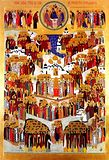

храма святого праведного Иоанна Кроншдатского
Добро пожаловать к нам!


Календарь:
3 июля 2016 г. ( 20 июня ст.ст.), воскресенье.
Неделя 2-я по пяти
Сщмч. Мефодия (икона), еп. Патарского. Блгв. кн. Глеба Владимирского (сына св. Андрея (икона) Боголюбского). Мч. Инны (икона), Пинны (икона) и Риммы (икона). Мчч. Аристоклия пресвитера, Димитриана диакона и Афанасия чтеца. Свт. Левкия исп., еп. Врунтисиопольского. Свт. Мины, еп. Полоцкого. Прав. Николая (икона) Кавасилы (Эллад.). Перенесение мощей свт. Гурия (икона), архиеп. Казанского. Собор (икона) всех преподобных и Богоносных отцев, во Святой Горе Афонской просиявших. Моденской (икона) (Косинской) иконы Божией Матери.
Новости прихода:
Востановим порушенные святыни!ОБРАЩЕНИЕ МИТРОПОЛИТА КРУТИЦКОГО И КОЛОМЕНСКОГО ЮВЕНАЛИЯ К ДУХОВЕНСТВУ, МИРЯНАМ, ОБЩЕСТВЕННЫМ ОРГАНИЗАЦИЯМ, БЛАГОТВОРИТЕЛЯМ И ЖИТЕЛЯМ ПОДМОСКОВЬЯ...
Построим новый храм!Братия и сестры! 14 июня 2015 года Православная Церковь будет праздновать 25-летнюю годовщину прославления в лике святых Великого Пастыря и молитвенника Земли Русской – святого праведного Иоанна Кронштадтского (1829-1908 гг.)...